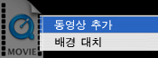
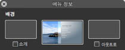

메뉴 배경에 자신만의 비디오를 추가하려면,

배경 비디오를 추가하려는 메뉴가 iDVD 윈도우에 나타나는지 확인하십시오.

미디어 단추를 클릭하고 동영상 단추를 클릭하여 동영상 폴더에 접근하십시오.
3단계에서 설명한 방법을 사용하여, 동영상 패널이 아닌 컴퓨터의 다른 곳에 저장한 동영상 파일을 드래그할 수도 있습니다.

다음 방식 중 하나를 사용하여 메뉴 배경에 비디오를 추가할 수 있습니다.
동영상 패널에 있는 동영상을 아무 드롭존 바깥에 있는 DVD 메뉴로 드래그하십시오. 파일을 드롭하기 전에 Command 키를 누른 상태로 나타나는 단축키 메뉴에서 "배경 대치"를 선택하십시오(아래 참조). 그런 다음, 마우스 단추를 놓으십시오.

포인터를 해당 메뉴 위에 두고 선택된 단추나 텍스트 대상체가 없는 상태에서 Command-I를 눌러 메뉴 정보 윈도우를 여십시오. 동영상 패널에 있는 동영상 파일을 배경 영역(중앙 영역, 아래 참조)으로 드래그하십시오.

드롭존 단추(아래 참조)를 클릭하여 드롭존 편집기를 여십시오. 동영상 패널에 있는 동영상 파일을 메뉴 패널로 드래그하십시오. 추가한 동영상 파일의 종류에 해당하는 아이콘이 패널에 나타납니다.


메뉴 정보 윈도우가 이미 열려 있지 않다면 Command-I를 누르십시오. 루프 실행 시간 슬라이더를 이동하여 반복(또는 "루프")되기 전에 동영상을 재생시킬 시간을 설정하십시오.
이 메뉴는 최대 15분 길이로 메뉴에 추가한 최장 메뉴의 길이까지 루프될 수 있습니다(예를 들어, 동영상 또는 재생목록).